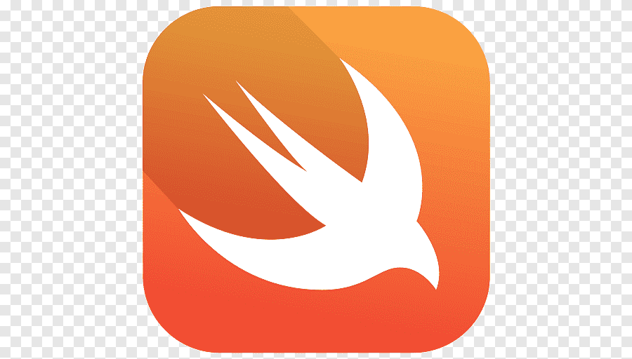

Mi pagina con Bootstrap
Bootstrap es un framework front-end utilizado para desarrollar aplicaciones web y sitios mobile first, o sea, con un layout que se adapta a la pantalla del dispositivo utilizado por el usuario.
| # | Nombre | Paterno | Materno |
|---|---|---|---|
| 1 | Jorge Alberto | Lopez | Guillen |
| 2 | Eduardo | Pola | Cal y Mayor |
| 3 | Adrian | Hipolito | Perez |
¿Qué es python?
¿Qué es y para qué sirve python? El lenguaje de programación Python es ampliamente utilizado por empresas de todo el mundo para construir aplicaciones web, analizar datos, automatizar operaciones y crear aplicaciones empresariales fiables y escalables.
Más información¿Qué es Ruby?

HTML5 (HyperText Markup Language, versión 5) permite definir los nuevos estándares de desarrollo web, modificando el código existente para solucionar problemas y actualizándolo a las nuevas necesidades de hoy en día. es un lenguaje de etiquetas, utilizado para la estructuración y la presentación de contenido en los sitios web.
Más información¿Qué es Swift?
Swift es un lenguaje de programación multiparadigma creado por Apple enfocado en el desarrollo de aplicaciones para iOS y macOS
Más información